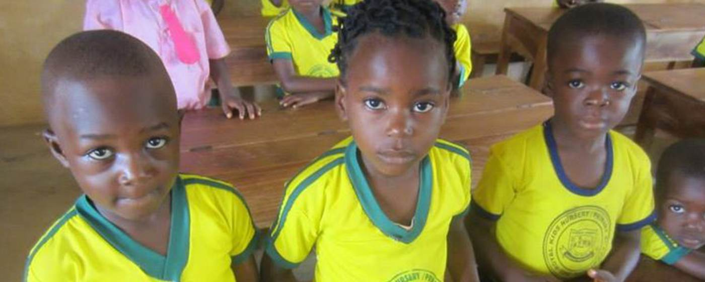
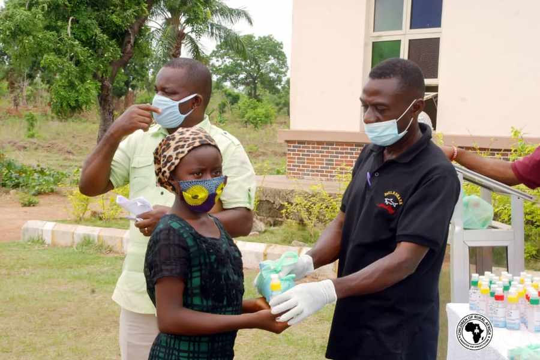

Donate

Education for Africa’s Future
A school, and everything that keeps a child in it.
CORAfrica builds schools in rural Nigeria where none exist — then adds the clinic, the farm and the workshop that keep children coming back.
Donate
Partner with us
Registered 501(c)(3) since 2006
Cross River and Benue States
Aligned to five UN SDGs
Partnered with the Diocese of Ogoja
Twenty years on the ground
2,000+
Pupils educated
At St. Joseph’s, Idum-Mbube alone
500+
Women financed
Soft loans and grants to date
5
Schools founded
Across Cross River State
2
Centres running
Mbube-Ogoja and Victoria-Ikom
Independently reported — National Catholic Reporter, Vanguard, ThisDay
The Community Education Centre
A school on its own does not keep a child in school.
Hunger, illness, and a family with no income take more children out of class than any exam does. So our model puts four things on one site.
Education
Primary and secondary schools, built where no school exists, plus vocational and skills centres.
Healthcare
A clinic on the school site, and care concentrated on a child’s first 1,000 days.
Agriculture
A demonstration farm that feeds the school and teaches the trade hands-on.
Livelihoods
Soft loans so a parent can build a business and afford to keep a child in class.
Read the strategic plan
Our schools
Built where there was nothing.

300+ students
John Stilley Secondary School
Victoria, Ikom — the only secondary school in its community

Founded 2020
John Bosco Academy
Adagom, Ogoja — for refugee children arriving from Cameroon

2,000+ pupils
St. Joseph’s School
Idum-Mbube — school and orphanage, now run by the Diocese of Ogoja
Our founder
“Most of my peers in our village could not. So I decided to fill that gap.”
Fr. Peter Obele Abue conceived CORAfrica in 2006 while completing a PhD in International Development at Cornell. He is Vicar General of the Catholic Diocese of Ogoja.
In the news
Reported independently.
National Catholic Reporter
May 2024
Catholic-run CORAfrica aims to fill learning gap fueled by poverty in Nigeria
Read the article →
Vanguard
Jul 2026
CORAfrica expands community development through education, healthcare, livelihood programmes
Read the article →
ThisDay
Jul 2026
CORAfrica expands access to education for children in rural communities
Read the article →
Support the work
₦150,000 started a business. $40,000 started a programme.
CORAfrica is a registered 501(c)(3), so gifts from US donors are tax-deductible. Give once, or monthly.
Give monthly
Give once
Processed securely by Stripe
Helping children and communities thrive. A registered 501(c)(3) non-profit in the United States, operating in Cross River and Benue States, Nigeria.
Nigeria
No 48 Mbube Road, Opposite Govt. Technical College, Abakpa, Ogoja, Cross River State
United States
PO Box 13, Evans City, PA 16033
Contact
info@corafrica.org.ng
+234 915 314 2288
+234 915 314 2288
© 2026 Children of Rural Africa
EIN [REQUEST] · CAC [REQUEST]